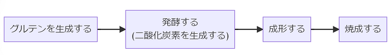
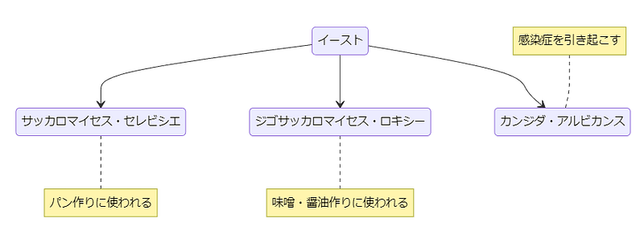
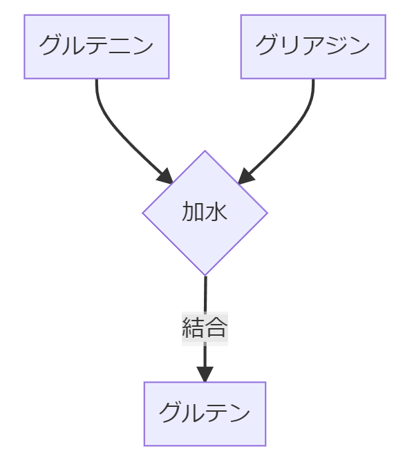
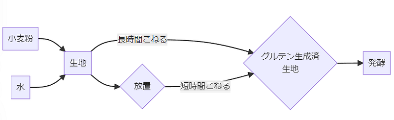

パン作りの科学（に関する個人的なメモ）
パン作りの科学（に関する個人的なメモ）
パンを作るだけならレシピの通り作業すればいいのですが、私のように大枠だけでも理屈がわからないとなんだか手を動かせない、そんな自分のための読んだ・見た・やってみて理解した内容を、私の理解している範囲内で以下に解説を書きました。
私はあくまでただのプログラマーなので、内容が怪しいところもあるかもしれませんが、そのような場合は是非みなさまでネットや手元の文献を参考に正誤を確認してみてください。
ここではいわゆるイーストを使った基本的な欧米風のパンを作ることをイメージしています。フラットブレッドに類するものやイーストを使っていてもラミネーションが必要なクロワッサンの類は考慮していませんのでご了承ください。
パン作りの4工程
パンを作る工程はおおよそ以下の４つの工程に分けることができます。そしてどのパンも基本的にこの同じ工程を経て作ることが可能です。

グルテンの生成
パンづくりの工程ではまずグルテンを生成します。グルテンは小麦粉と水を合わせることにより、小麦粉内のたんぱく質が結合した結果です。
グルテンはガムのような弾力性のあるたんぱく質で、これがパンの形を作る骨格および、後述の二酸化炭素ガスを溜めるための膜となります。
このグルテンを充分生成することができたら次は発酵の段階となります。
発酵による二酸化炭素の生成
発酵とは微生物の力を借り、微生物の代謝から得られる成果を利用する工程です。パンづくりにおいてはイーストを使い、二酸化炭素を発生させることで生地に独特のフワフワ感を生み出す工程を差します。
パンの発酵には一般的に「イーストを使う」と言いますが、イーストはある種の真菌類の総称です。イーストと呼ばれる菌類には病気の元になるものもありますが、パンや味噌を作るのにつかわれる人類にとって有用なものも含まれます。

この中でパン作りに使われるイーストは糖類を代謝して二酸化炭素を作り、この工程を一般的に発酵と呼ぶわけです。この過程で発生した二酸化炭素が前述のグルテンの膜によって無数の小さな気泡となりパン生地の中にとどめられ、生地全体がふくらみます。
ある一定量までガスが溜まれば、成形の段階です。
生地をパンの形に成形する
発酵の工程でできた気泡を残しつつ、最終的にオーブンで焼成した際の形になるように生地を成形します。
成形のあと2次発酵と呼ばれる工程も存在するため「発酵の工程は2回あるのでは？」と思われる方もいるかとは思います。
私は2次発酵は成形の一部と考えているのでここでは敢えて別工程とはしていません。例えば、1次発酵の終わった生地を丸めて型に入れたあと2次発酵をするのはその型いっぱいに生地を広げるためなので、成形の一部かな、と考えています。
生地を焼く
そして形が整えばあとは焼く段階です。熱を加えることによりたんぱく質を凝固させ、ガスでできた気泡を残したまま形を固定します。
この気泡がパン生地内の小さな部屋として固定され、全体としてはフワフワの食感になるわけです。
以上でパン作りの流れは完了です。どんなパンを作っても材料や成形などの細かいステップが違うだけでこの流れ自体は同じです。逆に言えばこの工程さえ理解していればどんなパンでも作れるわけです。
グルテンの生成の仕組み
前節で解説した通り、発酵で生成されるガスを効率よくとどめておけなければ我々が求めるあのパンの形を生まれません。そのためグルテンをしっかり、そして効率的に生成することがパン作りでは重要になります。
それではグルテンはどのように生成されるのでしょう。
グルテンは小麦粉内に含まれているグルテニンとグリアジンという二種類のたんぱく質が結合することによって生まれます。この結合のためには水分が必須です。

グルテニンはバネのように元の形に戻ろうとする性質がありますが、グリアジンはグルテニンの間に入りたんぱく質が伸びたり形状を変えるのを助けます。
この二つが結合してグルテンとなり、グルテンがたっぷり存在することによって加水した小麦粉は伸縮両方の特性を備えた生地となるわけです。このグルテンが発酵の工程で生成されるガスをとどめパンの形・食感を作ります。
なお、グルテンは水と結合する必要があるため、パン生地の中に小麦粉と水以外のものが多ければ多いほどこの結合が邪魔をされる傾向があります。そのため生地に小麦粉、イースト、塩砂糖以外の卵などの材料を入れた生地の場合、若干グルテン膜を作りにくくなります。
捏ねる工程
パン作りをする際にはグルテンを生成するために生地を捏ねる作業が入りますが、これはあくまでグルテンを効率的に生成するためです。
実は小麦粉に加水すると、それだけでグルテン生成自体は始まります。ただこれだけでは二つの問題が発生します：
- グルテニンとグリアジンの並び方や位置によってどれだけ／どのような形でグルテンが生成されるかが決まってしまう
- 肉眼レベルでは小麦粉に充分水分がいきわたっているように見えても、実際にはグルテニンとグリアジンに充分水分が行き届いていない場合がある
つまり放っておけばそのうち充分に水分が行きわたってグルテニンとグリアジンの結合は可能になりますし、いびつな並びながらグルテンがそれなりに生成される可能性はあるものの、運任せな部分があるうえに時間がかかるわけです。これだと様々な問題がありえるので、人は生地を捏ねるという仕組みを考えだしました。
生地を捏ねるのは生地内での水分吸収をより効率的に行うため、そして効率的かつ規則的にグルテンを生成するためです。
水分吸収は感覚的にもわかりやすいと思いますが、グルテン生成に関しては捏ねる際に発生する「伸ばす」「畳む」という作業がたんぱく質を規則的に並べるという効果を生み出し、よりよいグルテンの層を作る結果になります。
これらのため、生地を捏ねるという作業があるわけです。
オートリーゼ
逆に放っておいてもグルテンが生成されるならばそれでもよい、という考え方もできます。「捏ねないパン」「No Knead Bread」と呼ばれるレシピはこの考え方を踏襲して、時間をかけることと必要最低限の捏ねだけでパンを作るという考え方で行われます。
カンパーニュ等のハードブレッドを作る工程の中でよく使われるのがオートリーゼという言葉です。オートリーゼは、小麦粉と水をよく混ぜて、その後1時間程度放っておく工程のことを指します。
オートリーゼで加水した小麦粉を一定時間放置しておくことで捏ねなくともグルテンの生成がすすみ、その後の捏ね作業を大幅に短縮することが可能になります。

オートリーゼの注意点と使いどころ
オートリーゼを行う際、基本的には小麦粉と水だけでこの工程を行うのが重要です。イーストを先にいれてしまうとその間に発酵が始まってしまいますし、塩や砂糖等も入れてしまうと、それらも水分を吸収しようとするので小麦粉の吸水をその分妨げてしまいます。
また長時間のオートリーゼも避けましょう。大気中のイーストを含む様々な菌が繁殖を始める可能性もありますし、長くやればやるほど効果が高まるというわけでもありません。
オートリーゼはどうしても必要な工程ではありませんが、例えば機械で生地を捏ねると摩擦で生地の温度が上がってしまうような場合、そもそも捏ねる時間を減らせるのでとても有効です。
パン生地発酵の仕組み
発酵の条件
パン生地の発酵はガスを発生させる菌の活動（代謝）を活発に行わせるための条件を揃えることが重要です。その条件とは主に「水分」「糖分」「温度」のことを指します。
ここではまず水分と糖について解説します。ここでいう糖とはもちろん砂糖のようなものだけではなく、でんぷん質もそれにあたります。ですのでパン生地の場合、すでにでんぷん質が小麦粉に豊富に含まれているので発酵のために砂糖を入れないといけないということはありません。
現代のドライイーストは大変優秀でパン生地に入れるだけでガンガン発酵してくれますが、そうでないイーストの準備をする際には砂糖水でイーストを活性化させるというステップが必要なため「イースト＝砂糖」という図式が頭の中にある人も多いと思います。
ですが前述の通り砂糖を全く使わないパン生地でも発酵には一切支障がないため、パン作りの際にむしろ気をつけなくてはいけないのはパン生地の水分量かと思われます。
後述しますが、例えば長時間発酵を行った場合は表面から水分が少しずつ抜けていきますので、その分発酵が進みにくくなってしまいます。パン生地を発酵させる過程で「濡れ布巾をかけておく」などの説明がよく見かけられるのはこのような自然乾燥をなるたけふせぐためです。
発酵温度と時間の考え方
イーストが活発に代謝をするための水分と糖分を用意したら、次は温度の調整です。
イーストの中の菌は30℃前後で最も活動が活発になります。… なるはずです。というのは、参考にする文献によって意外とこのあたりのばらつきがあり門外漢の私でははっきりとこれだ！と言い切ることができないからです。ただ、ばらつきが多いのは菌についての文献ではなくパン作りの文献のほうなので、多分イーストそのものの活動に関しては好適条件は30℃であっているのではないかと思います。
実はパン作りをする際には正確にこの温度を保つことはそれほど重要ではありません。イーストが全く活動できないほどの低温か、イーストが死滅してしまうほどの高温でない限りイーストは活動をやめないからです。
室温20℃でもイースト菌は当然活動しますし、冷蔵庫や冬の室内でもありえる5℃でも同じです。では温度によって何が変わるかというと、発酵にかかる時間となります。
例えば好適温度で発酵させると1時間かかる工程が低温だと4時間、6時間とかかるようになります（ただしその分生地が乾燥したりするとイーストが活動できなくなります）
例えば冷蔵庫にパン生地を入れておいてもイーストは活動を続けてパン生地は膨らみます。ただし、30℃の状態で発酵するのと比べると時間はかなりかかります。逆に30℃を超えてくるとちょっとコントロールが大変なのでおすすめはしませんが、それでも一応発酵はすすみます。
ともあれ、いわゆる人間が快適な温度であれば基本的にパン生地を発酵させるのに問題はありません。
ただし、ある程度勢いよく菌を繁殖させないと十分に菌が繁殖する前に生地の状態が悪くなってしまうことが考えられます。
パンチ（ガス抜き）
発酵して膨らんだパンを一度叩いて平たくする作業のことをパンチといいます。この際最初にできたガスはかなり抜けてしまいます。経験上ただパンを焼くだけなら必須ではありませんが、こうしたほうが気泡の大きさが整いきめ細かな生地になったり、イーストが新鮮な酸素に触れて活動が活発化されたり、生地のグルテン膜を強化するなどの効果があります。
せっかく発生したガスを抜いてしまうのはもったいないと思われるかもしれませんが、この作業のポイントはガスを抜く事であって、気泡はなるたけつぶさない、ということです。
気泡がつぶれてしまう「こね」はここでは行いません。あくまで、生地を畳んだり、上からたたいたりしてガスを追い出すだけです。また、この際ガスを完全に抜く必要もありません。グルテン膜は守りつつ、ガスをある程度抜くにとどめます
この作業を行ってから、2次発酵を行います。パンの製法によってはこの段階で成形してしまって2次発酵に入ったり、2次発酵をしてから成形するなどのバリエーションがあります。
サワードウのような高加水生地の場合はこの作業のかわりに生地をもちあげてたたむ、という行為を発酵中に何回かにわけて行います。
成形
成形ではなによりも生地の外側になる部分のグルテン膜をしっかりと整えることが重要です。
例えば発酵が終わった生地を分割して成形する場合、元の生地を切った段階でどうしても一度はグルテン膜が損なわれています。この際、外側の膜となっていた部分を伸ばし、また包むように生地を閉じる必要があります。
このさいキチンと表面の生地を伸ばしてなめらかにしないとその後のオーブンスプリングや成形のできに大きな影響がでます。
クープの有無
クープを入れる、とは焼成前にパン生地に剃刀等で切れ目を入れることを言います。バゲットやカンパーニュなどのハードブレッド系のパンによく適用されます。
この切れ目は最終的にオーブンスプリングによって焼成時に生地が膨張する際発生する水蒸気を含むガスの逃げ道として機能します。クープを入れないと、パン生地内のガスは逃げ場を失い、どこでもよいので一番生地が弱い部分から外に逃げようとしてしまい、結果的にパンの形が悪くなります。
クープを入れることによりこれらのガスの逃げ道を作るとともに見た目にも美しい装飾をいれています。

出典: フリー百科事典『ウィキペディア（Wikipedia）』 フランス語ではフランス発祥のパン全体を意味する用語はないが、棒状の堅焼きパンをパン・トラディショネル（pain…ja.wikipedia.org
焼成
パン生地はもちろん生では食べられません。また、焼くことで発酵工程で生地内生まれた小さな部屋を固定し、その形で固定するとともに、焦げを意図的に作ることにより視覚的に食欲をそそるような効果をもたらしてくれます。

出典: フリー百科事典『ウィキペディア（Wikipedia）』 あんパン（餡パン、 英語：Anpan）は、中に 小豆餡を詰めた 日本の 菓子パンの一種。発祥である 木村屋總本店…ja.wikipedia.org
焦げ部分は何もしなくてもある程度はつきますが、皆さんが日本のパン屋で見慣れているあの栗色の照りを再現するには焼成前にパン生地の表面に卵液を塗る必要があります。
一個80g前後のパン生地に十分火を通すだけなら、150～160℃程度の低温で10分～15分で十分です。この場合焦げ色はつきませんが、中に火が通るのには十分となります。
日本の通常のパンの場合はだいたい200℃前後の温度で15分前後加熱すると表面に焦げ色が付き、良い感じに焼きあがります。
逆にカンパーニュのような大きなパンを焼く場合は火を通すのに20分、焦げ色をつけるのに30分ほどかかることもあります。
焼成の段階
パン生地は加熱すると突然固まるわけではありません。温度事に段階があります。オーブンにパン生地を入れ、加熱し始めると生地の温度がだんだんあがっていきます。
45℃前後： 生地内のイーストの活動が活発になり、追加でガスが発生します。また、この段階では生地内のでんぷん質が流動的になり、生地が緩んで伸びる余地が生まれます。
～60℃： 前述の活発化した活動で発生したガスとその加熱により、生地全体が膨張します。この段階で起こるふくらみをオーブンスプリング（窯伸び）といいます。
60℃～： イースト菌類が死滅してガスの発生が完全に止まります。生地の一番外側部分から固化が始まり、クラスト（パンの皮部分）が形成されはじめます。
90℃～：クラストがしっかりと形成され、メイラード反応が始まって焼き色が付き始めます。
この際重要なのは温度と時間の大枠を大きく変えないことです。温度を低くして長い時間をかけて焼くと、生地が膨張するより前に生地が乾いてしまい(※)、オーブンスプリングが阻害されます。同様に温度を高くして時間を短くしようとしても、先にクラストが形成されてしまい外側が固まってしまうと内側からの伸びにクラストが対応できなくなってしまいます。基本的には200℃前後で15分前後が正解の値です。
(※)逆にパン以外の何かを乾燥させたい場合は低めの温度で長時間加熱することによりしっかり乾燥させることが可能です。
ハードブレッド類の場合
ハードブレッド類および大型の生地の焼成は、生地の中の温度があがるのに時間がかかるため、前述した温度と時間の目安が少し変わってきます。
このような場合は生地の中の温度があがるまでにクラストが形成されにくくなるよう、焼成中に蒸気が発生するようにします。私がサワードウを焼く際には蒸気が漏れにくいダッチオーブンに入れるとともに、多めに霧吹きで水分を生地にまとわせます。
ダッチオーブンに入れて加熱することにより、蒸気となった水分はパン生地のクラストの形成をある程度阻害してくれます。クラストが固化してしまうまでの時間をかせぎ、その間に生地内部の温度をあげていくわけです。
参考文献